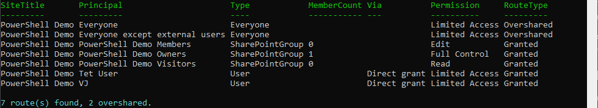

Report SharePoint site access and flag oversharing (by site or by user)
Summary
Permission reports usually tell you the what (this group has Edit) but not how the access was granted or whether it should be there. This script walks a site's role assignments and classifies every route as one of:
| Route type | Meaning |
|---|---|
| Granted | A named user, or a group someone deliberately added. |
| Overshared | An "Everyone" / "Everyone except external users" claim, or a sharing-link group. Access nobody was explicitly given, and the usual source of Microsoft Search and Copilot exposure. |
It runs in two directions:
-Mode BySite(default) lists every principal that can reach the site, one row each, Overshared first, with the member count for groups. Answers "who can see this site?".-Mode ByUserreports what a given user can reach and by which route. It first asks the definitive question withGetUserEffectivePermissions(can they actually access the site, and at what level), then attributes that access to each route: a direct grant, a SharePoint group membership, or an Everyone claim.
Everyone-claim and sharing-link detection is matched on the login name, not the display title, because a tenant can rename a group but not its underlying claim. Add -OversharedOnly to see just the routes worth acting on, -ExpandGroups to expand SharePoint groups to people, and -CsvPath to export.

Note
Reading permissions requires Full Control on the site (Contributor is not enough). Register an app for interactive sign-in once with Register-PnPEntraIDAppForInteractiveLogin and pass its client id with -ClientId.
This is a focused, single-site sample. The full tool it is drawn from adds tenant-wide scans, item-level deep crawl, Entra-group expansion via Microsoft Graph, and a GUI: User Access Explorer.
<#
.SYNOPSIS
Reports who can reach a SharePoint Online site and how, and flags oversharing
(access nobody was explicitly given). Works from two directions: the site's
side ("who can reach this site?") or a user's side ("what can this user reach
here, and by which route?").
.DESCRIPTION
Permission reports usually tell you the "what" (this group has Edit) but not
the "how it got there" or "should it be there". This script walks a site's
role assignments and classifies every route as one of:
Granted - a named user or a group someone deliberately added
Overshared - an "Everyone" / "Everyone except external users" claim, or a
sharing-link group. Access that was never explicitly granted
and is the usual source of Copilot / search oversharing.
-Mode BySite (default): one row per principal that can reach the site, with the
member count for groups. Answers "who can see this site?".
-Mode ByUser: pick a user. First it asks the definitive question with
GetUserEffectivePermissions (can they actually access the site, at what
level), then it attributes that access to each route (direct grant,
SharePoint group membership, or an Everyone claim).
Everyone-claim and sharing-link detection is matched on the login name, not the
display title, because a tenant can rename the group but not its claim.
.PARAMETER SiteUrl
The SharePoint Online site to audit, e.g. https://contoso.sharepoint.com/sites/Marketing
.PARAMETER Mode
BySite (default) = who can reach the site. ByUser = what a given user can reach.
.PARAMETER UserLogin
Required for -Mode ByUser. A UPN (jane@contoso.com) or a full claims login.
.PARAMETER ClientId
The Entra app (client) ID registered for PnP PowerShell interactive sign-in.
.PARAMETER ExpandGroups
BySite only. Expand each SharePoint group to one row per member.
.PARAMETER OversharedOnly
Return only the Overshared routes (the ones worth acting on first).
.PARAMETER CsvPath
Optional. Also write the rows to this CSV path.
.EXAMPLE
.\Audit-UserAndSiteAccess.ps1 -SiteUrl https://contoso.sharepoint.com/sites/Marketing -ClientId 00000000-0000-0000-0000-000000000000
Lists every principal that can reach the Marketing site, Overshared first.
.EXAMPLE
.\Audit-UserAndSiteAccess.ps1 -SiteUrl https://contoso.sharepoint.com/sites/Marketing -Mode ByUser -UserLogin jane@contoso.com -ClientId 00000000-0000-0000-0000-000000000000
Shows what Jane can reach on the site and by which route.
.EXAMPLE
.\Audit-UserAndSiteAccess.ps1 -SiteUrl https://contoso.sharepoint.com/sites/Marketing -ClientId <id> -OversharedOnly -CsvPath .\marketing-oversharing.csv
.NOTES
Requires the PnP.PowerShell module and Full Control on the site (reading
permissions is not possible with Contributor). Register an app for interactive
sign-in once with Register-PnPEntraIDAppForInteractiveLogin.
This is a focused, single-site sample. The full tool it is drawn from adds
tenant-wide scans, item-level deep crawl, Entra-group expansion via Graph, and
a GUI: https://github.com/gvijaikumar9/UserAccessExplorer
#>
[CmdletBinding()]
param(
[Parameter(Mandatory)][string] $SiteUrl,
[ValidateSet('BySite', 'ByUser')][string] $Mode = 'BySite',
[string] $UserLogin,
[Parameter(Mandatory)][string] $ClientId,
[switch] $ExpandGroups,
[switch] $OversharedOnly,
[string] $CsvPath
)
Set-StrictMode -Version Latest
$ErrorActionPreference = 'Stop'
# --------------------------------------------------------------------------
# Pure helpers - the classification logic, no SharePoint calls.
# --------------------------------------------------------------------------
function Test-EveryoneClaim {
# The two claims that mean "everyone in the organisation". Matched on the login
# name because the title is whatever the tenant renamed it to.
param([string] $LoginName, [string] $Title)
return $LoginName -match 'spo-grid-all-users' -or
$LoginName -match 'c:0\(\.s\|true' -or
$Title -match '^Everyone'
}
function Test-SystemGroup {
# SharePoint's internal "Limited Access System Group" plumbing - noise, never a
# meaningful route.
param([string] $Title)
return $Title -like 'Limited Access System Group*'
}
function Test-SharingLinkGroup {
# The hidden group SharePoint creates to back a sharing link
# (SharingLinks.<guid>.<type>.<linkId>). Its presence in role assignments is
# what a sharing link IS at the permission layer.
param([string] $Title, [string] $LoginName)
return $Title -like 'SharingLinks.*' -or $LoginName -like '*SharingLinks.*'
}
function Get-SharingLinkKind {
# Pull the link type (Flexible / etc.) from the group name for display.
param([string] $Title)
$parts = $Title -split '\.'
if ($parts.Count -ge 3) { return $parts[2] }
return 'Unknown'
}
function ConvertTo-ClaimLogin {
# UPN -> the claims login SharePoint stores for an Entra member user. Passes a
# value that is already a claims login (has a pipe) straight through.
param([Parameter(Mandatory)][string] $User)
if ($User -match '\|') { return $User }
return "i:0#.f|membership|$User"
}
function Get-PrincipalClassification {
# Classify one role-assignment principal: what it is, and Granted vs Overshared.
param([string] $PrincipalType, [string] $LoginName, [string] $Title)
if (Test-EveryoneClaim $LoginName $Title) {
return [pscustomobject]@{ Kind = 'Everyone'; RouteType = 'Overshared'; Display = $Title }
}
if (Test-SharingLinkGroup $Title $LoginName) {
return [pscustomobject]@{ Kind = 'SharingLink'; RouteType = 'Overshared'; Display = "Sharing link ($(Get-SharingLinkKind $Title))" }
}
switch ("$PrincipalType") {
'User' { [pscustomobject]@{ Kind = 'User'; RouteType = 'Granted'; Display = $Title } }
'SharePointGroup' { [pscustomobject]@{ Kind = 'SharePointGroup'; RouteType = 'Granted'; Display = $Title } }
'SecurityGroup' { [pscustomobject]@{ Kind = 'EntraGroup'; RouteType = 'Granted'; Display = $Title } }
default { [pscustomobject]@{ Kind = 'Other'; RouteType = 'Granted'; Display = $Title } }
}
}
# --------------------------------------------------------------------------
# Engines
# --------------------------------------------------------------------------
function Get-RoleAssignmentMember {
# Load a securable's role assignments with every principal sub-property loaded
# explicitly - under StrictMode a lazily-loaded LoginName/Title/PrincipalType
# throws "property cannot be found".
param($Securable)
$assignments = Get-PnPProperty -ClientObject $Securable -Property RoleAssignments
foreach ($ra in $assignments) {
$member = Get-PnPProperty -ClientObject $ra -Property Member
[pscustomobject]@{
LoginName = Get-PnPProperty -ClientObject $member -Property LoginName
Title = Get-PnPProperty -ClientObject $member -Property Title
PrincipalType = Get-PnPProperty -ClientObject $member -Property PrincipalType
Roles = (Get-PnPProperty -ClientObject $ra -Property RoleDefinitionBindings |
ForEach-Object { $_.Name }) -join ', '
}
}
}
function Get-SiteAccessRow {
# BySite: one row per principal that can reach the web.
param($Web, [string] $SiteTitle, [switch] $ExpandGroups)
foreach ($m in Get-RoleAssignmentMember -Securable $Web) {
if (Test-SystemGroup $m.Title) { continue }
$c = Get-PrincipalClassification -PrincipalType "$($m.PrincipalType)" -LoginName $m.LoginName -Title $m.Title
$memberCount = $null
$people = @()
if ($c.Kind -eq 'SharePointGroup') {
$mem = @(Get-PnPGroupMember -Group $m.Title -ErrorAction SilentlyContinue)
$memberCount = $mem.Count
if ($ExpandGroups) { $people = $mem }
}
elseif ($c.Kind -eq 'EntraGroup') {
$memberCount = 'Entra group (not expanded in this sample)'
}
if ($ExpandGroups -and $c.Kind -eq 'SharePointGroup' -and $people.Count -gt 0) {
foreach ($p in $people) {
[pscustomobject]@{
SiteTitle = $SiteTitle
Principal = if ($p.Title) { $p.Title } else { ($p.LoginName -split '\|')[-1] }
Type = 'User'
MemberCount = $null
Via = $c.Display
Permission = $m.Roles
RouteType = $c.RouteType
}
}
}
else {
[pscustomobject]@{
SiteTitle = $SiteTitle
Principal = $c.Display
Type = $c.Kind
MemberCount = $memberCount
Via = if ($c.Kind -eq 'User') { 'Direct grant' } else { '' }
Permission = $m.Roles
RouteType = $c.RouteType
}
}
}
}
function Get-UserAccessRow {
# ByUser: does the user have effective access, and by which routes.
param($Web, [string] $SiteTitle, [string] $ClaimsLogin, [string] $Display)
$ctx = Get-PnPContext
$perms = $Web.GetUserEffectivePermissions($ClaimsLogin)
$ctx.ExecuteQuery()
$level =
if ($perms.Value.Has('FullMask') -or $perms.Value.Has('ManagePermissions')) { 'Full Control' }
elseif ($perms.Value.Has('EditListItems')) { 'Edit' }
elseif ($perms.Value.Has('ViewListItems')) { 'Read' }
elseif ($perms.Value.Has('Open')) { 'Limited Access' } # reached an item, not the site itself
else { 'None' }
if ($level -eq 'None') {
Write-Host "$Display has no effective access to $SiteTitle." -ForegroundColor DarkYellow
return
}
foreach ($m in Get-RoleAssignmentMember -Securable $Web) {
if (Test-SystemGroup $m.Title) { continue }
$route = $null; $routeType = $null
if (Test-EveryoneClaim $m.LoginName $m.Title) {
$route = "Everyone claim ($($m.Title))"; $routeType = 'Overshared'
}
elseif ("$($m.PrincipalType)" -eq 'User' -and $m.LoginName -eq $ClaimsLogin) {
$route = 'Direct grant'; $routeType = 'Granted'
}
elseif ("$($m.PrincipalType)" -eq 'SharePointGroup') {
$mem = @(Get-PnPGroupMember -Group $m.Title -ErrorAction SilentlyContinue)
if ($mem | Where-Object { $_.LoginName -eq $ClaimsLogin }) {
$route = "SharePoint group '$($m.Title)'"; $routeType = 'Granted'
}
}
elseif ("$($m.PrincipalType)" -eq 'SecurityGroup') {
# Entra security / M365 group. This sample does not confirm membership
# (that needs Graph), so it is reported as a possible route.
$route = "Entra group '$($m.Title)' (membership not checked in this sample)"; $routeType = 'Granted'
}
if ($route) {
[pscustomobject]@{
User = $Display
SiteTitle = $SiteTitle
EffectiveAccess = $level
Via = $route
Permission = $m.Roles
RouteType = $routeType
}
}
}
}
# --------------------------------------------------------------------------
# Main
# --------------------------------------------------------------------------
if ($Mode -eq 'ByUser' -and [string]::IsNullOrWhiteSpace($UserLogin)) {
throw "-UserLogin is required when -Mode is ByUser."
}
Connect-PnPOnline -Url $SiteUrl -Interactive -ClientId $ClientId
$web = Get-PnPWeb
$siteTitle = if ([string]::IsNullOrWhiteSpace($web.Title)) { $SiteUrl } else { $web.Title }
if ($Mode -eq 'ByUser') {
$claims = ConvertTo-ClaimLogin $UserLogin
$display = ($UserLogin -split '\|')[-1]
$rows = @(Get-UserAccessRow -Web $web -SiteTitle $siteTitle -ClaimsLogin $claims -Display $display)
}
else {
$rows = @(Get-SiteAccessRow -Web $web -SiteTitle $siteTitle -ExpandGroups:$ExpandGroups)
}
if ($OversharedOnly) { $rows = @($rows | Where-Object { $_.RouteType -eq 'Overshared' }) }
# Overshared first, so the rows that matter are at the top.
$rows = @($rows | Sort-Object @{ Expression = { $_.RouteType -eq 'Overshared' }; Descending = $true }, Principal, Via)
if ($rows.Count -eq 0) {
Write-Host "No matching access routes found on $siteTitle." -ForegroundColor DarkYellow
}
else {
$rows | Format-Table -AutoSize
$overshared = @($rows | Where-Object { $_.RouteType -eq 'Overshared' }).Count
Write-Host ("{0} route(s) found, {1} overshared." -f $rows.Count, $overshared) -ForegroundColor Cyan
}
if ($CsvPath -and $rows.Count -gt 0) {
$rows | Export-Csv -Path $CsvPath -NoTypeInformation -Encoding UTF8
Write-Host "Report written to $CsvPath" -ForegroundColor Green
}
Check out the PnP PowerShell to learn more at: https://aka.ms/pnp/powershell
The way you login into PnP PowerShell has changed please read PnP Management Shell EntraID app is deleted : what should I do ?
Source Credit
Sample first appeared on https://github.com/gvijaikumar9/UserAccessExplorer
Contributors
| Author(s) |
|---|
| Vijay Kumar G |
Disclaimer
THESE SAMPLES ARE PROVIDED AS IS WITHOUT WARRANTY OF ANY KIND, EITHER EXPRESS OR IMPLIED, INCLUDING ANY IMPLIED WARRANTIES OF FITNESS FOR A PARTICULAR PURPOSE, MERCHANTABILITY, OR NON-INFRINGEMENT.